ORB features · pure-rotation model · equirectangular output
Sweep a room.Get a sphere.
Point your phone at the scene, rotate once, and this pipeline turns the frames into a seamless 360° panorama — geometry recovered from features alone, no gyroscope, no tripod, no stitching app.
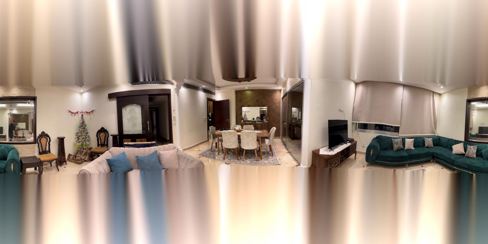
Drag to look · scroll to zoom
panorama.jpg.01 — Pipeline
Four stages from frames to sphere
The run below is real: 309 frames pulled from a phone video, matched pair by pair, chained into global rotations, then inverse-mapped onto an equirectangular canvas. Numbers are from that run, not a demo.
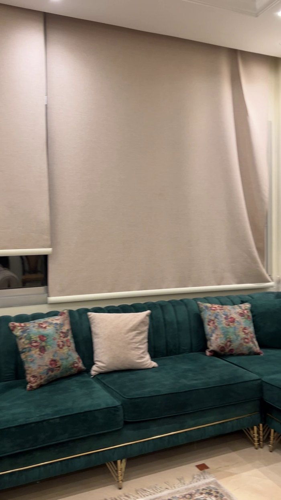
One frame off the phone
Frames come straight out of the video — every 2nd frame here, which
lands about 1.1° apart. Focal length comes from EXIF when it's there and from hfov_deg when it
isn't; this clip runs on a 42° horizontal field of view, fx = fy = 1475 px.
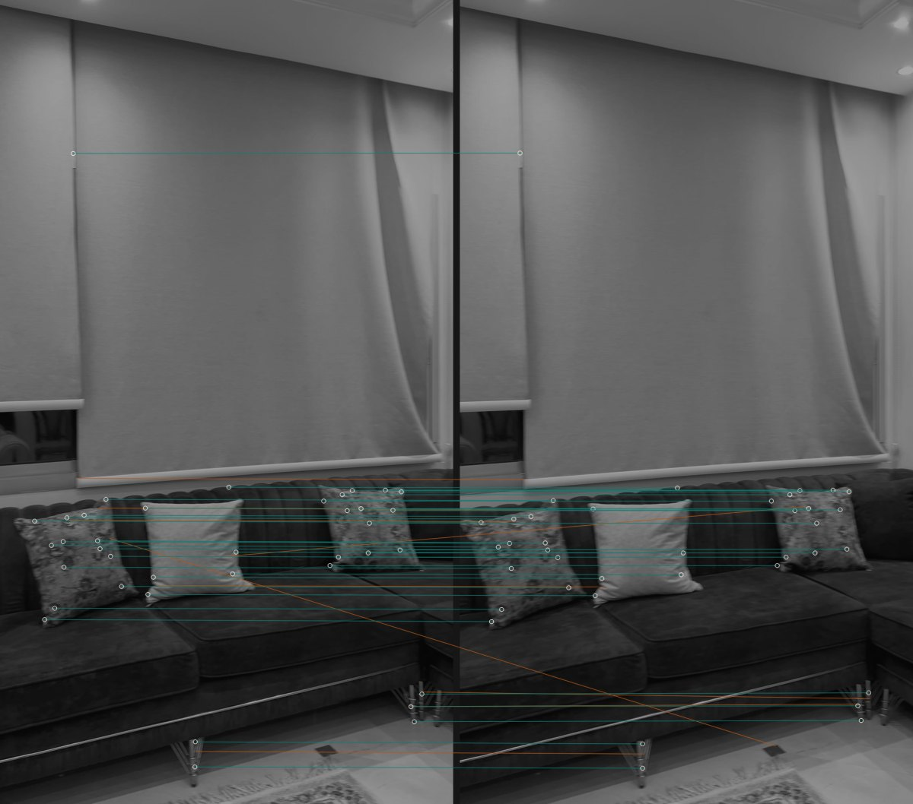
Features, then a homography
ORB finds 3,000 keypoints per frame; Lowe's ratio test keeps 1,574 of the pairings, and RANSAC certifies 1,530 of those as one consistent homography — the teal lines. Amber lines are the rejects it threw out. Notice the blank roller blind contributes almost nothing: texture carries the estimate, flat walls freeload.
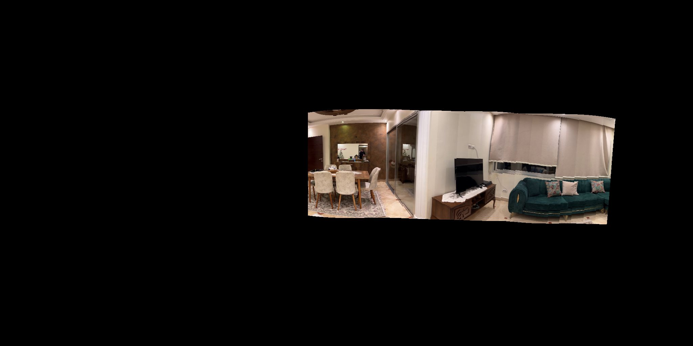
Rotation only, projected out
Each homography becomes a pure rotation via
R = K⁻¹HK, orthonormalized with SVD so it stays a real rotation, then chained frame to frame.
Every frame is inverse-mapped onto the sphere at its own angle. One frame alone covers 4.0% of the
canvas; this partial sweep is 26 of them.
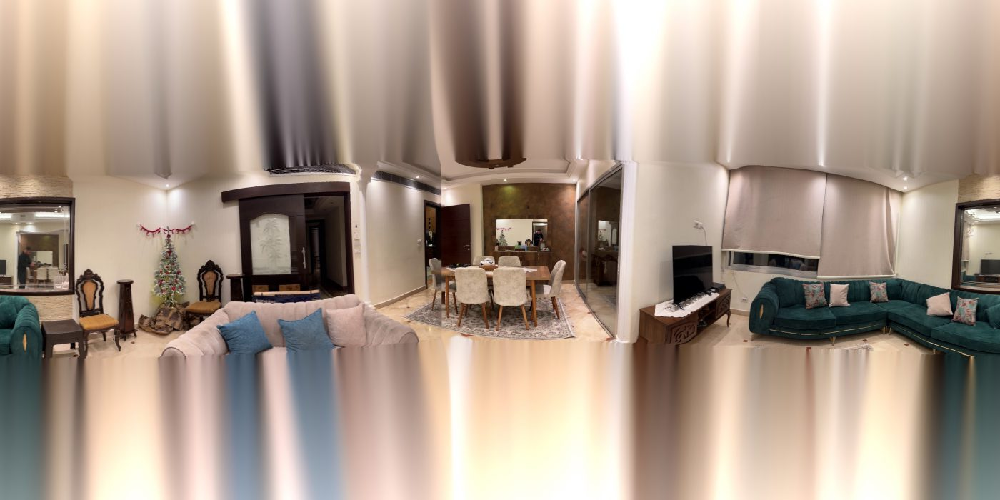
All 309 placed
The rest of the sweep fills the band, overlaps resolve by the chosen
blend mode — sharp, feather, multiband, or none — and the poles a
phone-height sweep never saw get filled from their surroundings. That's the image in the viewer above.
02 — The hard part
Small angle errors, loud results
Each pair's rotation is solved independently, so every frame arrives with its own few tenths of a degree of pitch and roll error. Across a 42° field of view at 4096 px wide that's several pixels of vertical offset per frame — and since neighbours overlap heavily, every seam leaves a step. Drag the dividers: left is smoothed, right is the raw chain.
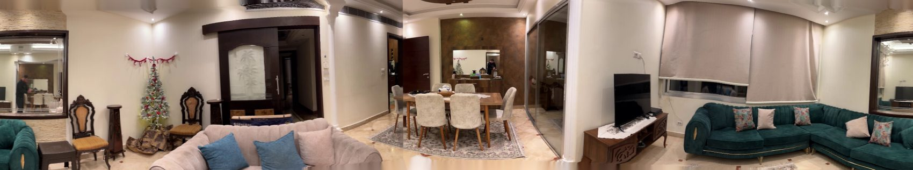
smoothedraw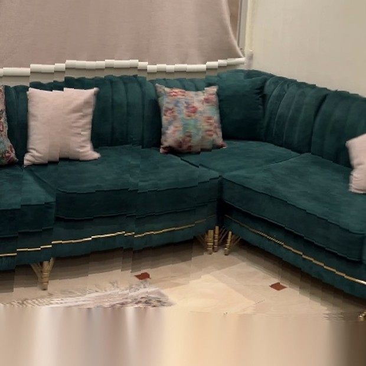
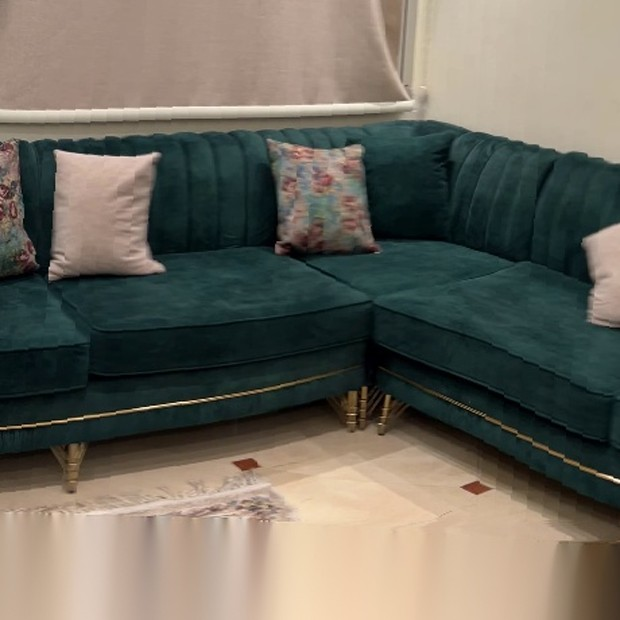
smoothedraw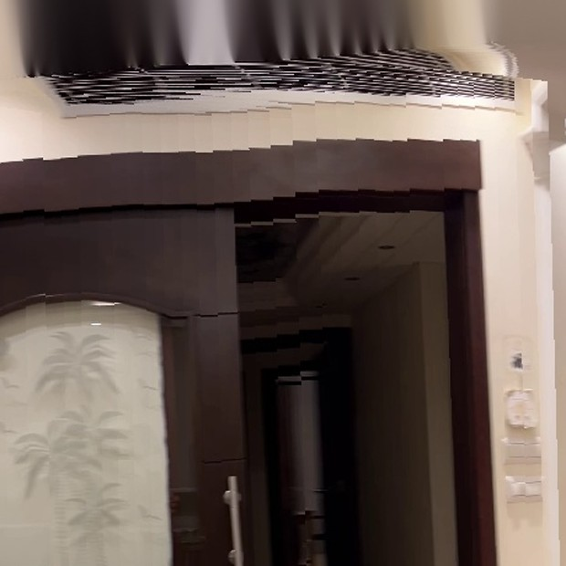
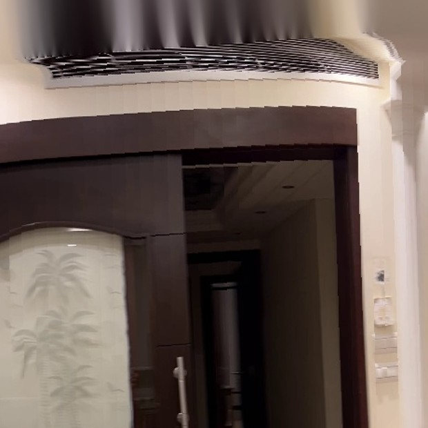
smoothedraw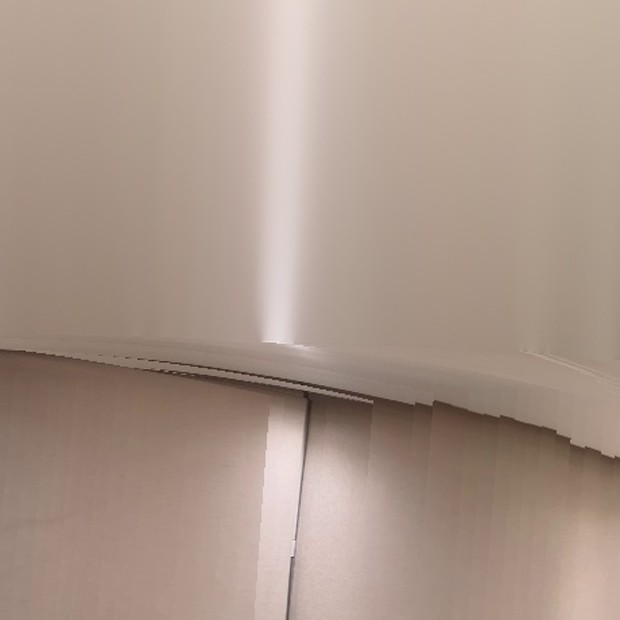
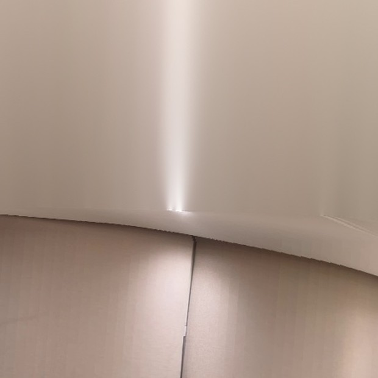
smoothedrawWhat the window fixes
A moving average over the chained rotations — window 17 on this run — collapses the frame-to-frame wobble while leaving the sweep itself alone. Measured on the run above:
| Angle | Raw wobble | Smoothed | |
|---|---|---|---|
| Pitch | 0.084° | 0.005° | 16.1× quieter |
| Roll | 0.121° | 0.008° | 15.5× quieter |
| Yaw | 0.208° | 0.019° | left alone |
Wobble = std. dev. of the second difference, sweep removed
Where drift shows up instead
Smoothing quietens the wobble but cannot remove the error that accumulates along the chain. Over 308 pairs this run over-measures the sweep as 332° of yaw. With a 40.2° field of view that is enough to close the circle, so the final frames would land on the same arc as the first one — and they show a different wall entirely, matching frame 0 with 6 inliers out of 3,000 keypoints.
The pipeline now checks: it measures the real span, tries to match the tail against the head, and when nothing matches it squeezes the sweep to 318° so the two ends stop short of touching. The correction is spread along the sequence rather than dumped at the join.
03 — The sweep
Every frame knows where it points
These are real frames from the run, evenly sampled across the sweep, each labelled with the yaw the pipeline solved for it. Pick one and the viewer above turns to face it.
Handheld, and it shows
The sweep starts almost stationary — 0.03° per frame for the first dozen — then settles to a steady 1.08° per frame and finishes mid-motion at about 1.2°. Pitch wanders over 7.3° across the sweep because an arm is not a tripod; that wander is exactly what the rotation chain has to absorb.
When matching fails
15 of 308 pairs never reached the 200-inlier threshold — blank wall, blown highlight, too fast a turn. Rather than dropping those frames, the pipeline averages the rotations either side of the gap, falling back to one neighbour only when the other is missing too.
04 — Run it
Your own sweep, four commands
# 1 — get it git clone https://github.com/Kronbii/360-spherical-stitching.git cd 360-spherical-stitching pip install -r requirements.txt # 2 — point config.yaml at your video or photos # 3 — stitch python run.py config.yaml # 4 — look around open output/<name>/viewer/index.html
A video gets its frames pulled automatically; a folder of stills works just as well. Every knob lives in one YAML file, and the run prints a rotation summary as it goes so you can see the sweep add up.
- Docs
- USAGE.md — every option, with defaults
- Method
- TECHNICAL.md — the geometry, written out
- Smoothing
- TEMPORAL_SMOOTHING.md — window sizing
- Needs
- Python 3.12, OpenCV, NumPy. No GPU.
video: ./IMG_1480_2.MOV output_dir: ./output/livingroom video_extraction: method: interval # uniform · fps · motion frame_interval: 2 matching: match_full_res: true min_inliers: 200 rotation_smoothing_window: 17 intrinsics: hfov_deg: 42 output: pano_width: 4096